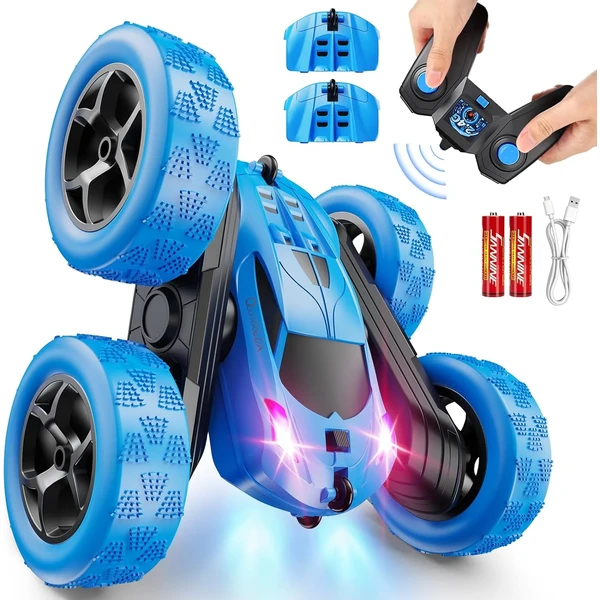
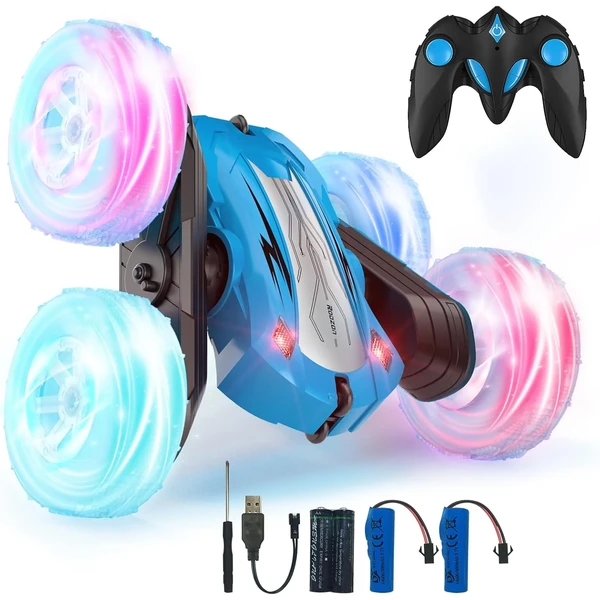
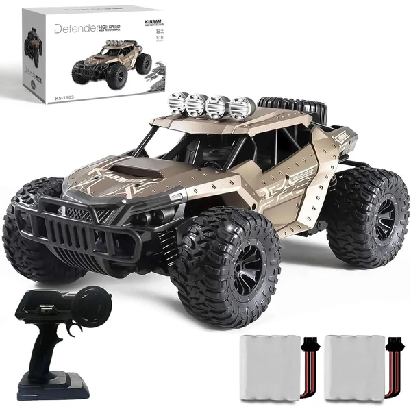

QUNREDA Coche Teledirigido RC Stunt
Un coche de acrobacias 4WD con baterías modulares recargables por USB-C. Incluye dos baterías de 25 minutos cada una, permitiendo hasta 50 minutos de juego continuo. Capaz de hacer giros de 360° y acrobacias multidireccionales con luces LED.
⭐ ¿Por qué nos gusta?
- ✔ Baterías modulares con carga USB-C rápida.
- ✔ Acrobacias de 360° y rotaciones multidireccionales.
- ✔ Alcance de 50 metros sin interferencias.
💬 Lo que más destacan las familias
Muchos padres coinciden en que las baterías modulares son un cambio importante: se pueden cambiar en segundos sin herramientas para jugar sin parar. El control de acrobacias resulta accesible incluso para principiantes.
Ver en Amazon

QUNREDA Coche RC de Juguete
Versión alternativa del modelo QUNREDA en color azul. Mismo sistema de baterías modulares USB-C, control de acrobacias y alcance de 50 metros. Luces LED con faros delanteros y neumáticos todoterreno de ABS de alta calidad.
⭐ ¿Por qué nos gusta?
- ✔ Baterías modulares fáciles de cambiar.
- ✔ Control anti-interferencias de 2,4 GHz.
- ✔ Neumáticos todoterreno muy resistentes.
💬 Lo que más destacan las familias
Entre los comentarios más habituales aparece la facilidad de manejo del control remoto de dos botones. El sistema de batería modular también se menciona como una de las mejores características.
Ver en Amazon

Rodzon Coche Teledirigido Acrobático
Un coche de acrobacias a alta velocidad con rotación de 360°. Incluye luces LED en los faros delanteros y en los neumáticos para jugar de día o de noche. Dos baterías recargables permiten 40-60 minutos de juego total.
⭐ ¿Por qué nos gusta?
- ✔ Luces LED en faros y neumáticos.
- ✔ Rotación de 360° y acrobacias a velocidad.
- ✔ Control anti-interferencias 2,4 GHz.
💬 Lo que más destacan las familias
Una de las cosas más comentadas es lo vistosa que resulta la iluminación de los neumáticos, especialmente en espacios con poca luz. También se valora que aguante bien en distintos terrenos, incluso en hierba o arena.
Ver en Amazon

KINSAM Coche RC 25 km/h
Un coche de control remoto con motor potente capaz de alcanzar 25 km/h. Batería mejorada de 1000 mAh ofrece 30 minutos de conducción. Sistema 4x4 con amortiguadores y parachoques delanteros y traseros resistentes.
⭐ ¿Por qué nos gusta?
- ✔ Velocidad máxima de 25 km/h.
- ✔ Alcance de control remoto de 60-80 metros.
- ✔ Construcción robusta con amortiguadores.
💬 Lo que más destacan las familias
Lo que más suele gustar es la velocidad que alcanza: es notablemente más rápido que otros modelos. Los padres también valoran que el alcance del control remoto permite jugar en espacios amplios sin perder el control.
Ver en Amazon

KINSAM Coche RC 20 km/h con 2 Baterías
Coche de control remoto con aceleración proporcional y velocidad máxima de 20 km/h. Incluye dos baterías de 1000 mAh que ofrecen 60 minutos de juego total. Luces LED 3A en la carrocería y diseño clásico en mango.
⭐ ¿Por qué nos gusta?
- ✔ Dos baterías: 60 minutos de juego total.
- ✔ Aceleración proporcional para mejor control.
- ✔ Luces LED y design nostálgico en mango.
💬 Lo que más destacan las familias
No es raro encontrar comentarios sobre lo útil que resulta tener dos baterías: mientras una carga, se sigue jugando. El control remoto tipo mango clásico resulta más cómodo para muchos niños que otros diseños.
Ver en Amazon

Spider Coche con Reconocimiento de Gestos
Un coche teledirigido de doble cara con reconocimiento de gestos por sensores de mano. Acrobacias 4x4 con giros de 360° y saltos mortales de doble giro. Recarga rápida por USB-C en 60 minutos.
⭐ ¿Por qué nos gusta?
- ✔ Control por gestos: tecnología novedosa.
- ✔ Acrobacias 360° y saltos dobles.
- ✔ Recarga USB-C en solo 60 minutos.
💬 Lo que más destacan las familias
Un detalle que aparece una y otra vez es lo divertido que resulta el control por gestos: los niños quedan fascinados por poder manejar el coche con las manos. Las acrobacias espectaculares también son un punto fuerte.
Ver en Amazon

Coche Teledirigido Unicornio 4WD
Un coche de acrobacias con diseño único de unicornio rosa y blanco. Capaz de giros, volteretas y demostraciones automáticas con velocidad máxima de 15 km/h. Incluye dos baterías recargables de 800 mAh y luces LED llamativas.
⭐ ¿Por qué nos gusta?
- ✔ Diseño exclusivo de unicornio, muy llamativo.
- ✔ Acrobacias automáticas y giros de 360°.
- ✔ Dos baterías para 40 minutos de juego.
💬 Lo que más destacan las familias
Una característica muy mencionada es el diseño especial de unicornio que fascina especialmente a las niñas. El coche resulta muy resistente a caídas y golpes, y las acrobacias automáticas entretienen incluso sin estar pendiente del mando.
Ver en Amazon